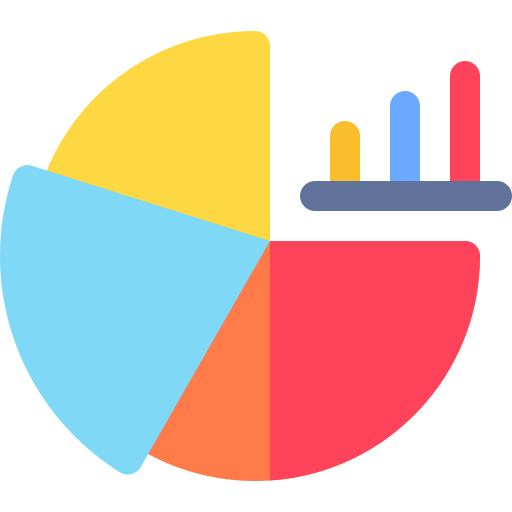

| {{ 'common.language' | transloco }} | {{ 'statistics.quantity' | transloco }} | {{ 'statistics.rereads' | transloco }} | {{ 'statistics.pages' | transloco }} |
|---|---|---|---|
| {{entrada.nome}} @if (derradeiro) { } | {{entrada.quantidade}} | {{entrada.quantidadeRelecturas}} | {{entrada.quantidadepaginas}} |

|
{{ 'statistics.years' | transloco }}
|
{{ 'statistics.quantity' | transloco }}
|
{{ 'statistics.rereads' | transloco }} |
{{ 'statistics.pages' | transloco }}
|
CC |
|---|---|---|---|---|
| {{entrada.nome}} @if ($last) { } | {{entrada.quantidade}} | {{entrada.quantidadeRelecturas}} | {{entrada.quantidadepaginas}} | {{anosResaltadosMapa()[entrada.id]}} |
| {{ 'common.genre' | transloco }} |
{{ 'statistics.quantity' | transloco }}
|
{{ 'statistics.rereads' | transloco }} |
{{ 'statistics.pages' | transloco }}
|
CC |
|---|---|---|---|---|
| {{entrada.nome}} | {{entrada.quantidade}} | {{entrada.quantidadeRelecturas}} | {{entrada.quantidadepaginas}} | {{generosResaltadosMapa()[entrada.id]}} |
{{ 'common.noData' | transloco }}
}